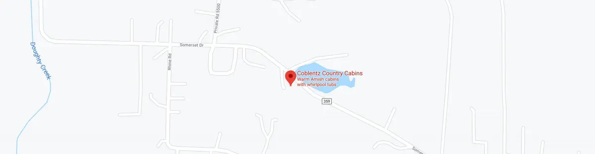

Find your way here
Less than 1/4 mile from downtown Berlin — right in the heart of Amish Country Ohio.
Berlin, Ohio — Amish Country
Coblentz Country Cabins sits on a quiet hillside overlooking a pond at 5130 Township Hwy 359 in Berlin, Ohio. The property is close enough to downtown to walk, yet private enough to feel like a true escape.
- Address: 5130 Township Hwy 359, Berlin, OH 44610
- From Cleveland: Approximately 90 minutes south via US-30 or I-77
- From Columbus: Approximately 2 hours northeast via US-62 or I-71
- From Pittsburgh: Approximately 2 hours west via US-30
- Nearest airport: Akron-Canton (CAK), approx. 60 miles
- Downtown Berlin: Less than 1/4 mile — a short walk or drive
Everything Amish Country has to offer
Berlin is the center of the largest Amish community in the world — with world-class food, handmade furniture, and one-of-a-kind shopping just steps away.
Dining & Bakeries
From homestyle Amish cooking at Boyd & Wurthmann to fresh-baked goods at local bakeries lining the main street.
Handcrafted Shopping
Browse furniture, quilts, cheese, and crafts made by local artisans — right in downtown Berlin and surrounding villages.
Farm & Country Tours
Experience Amish farm life up close, visit cheese houses, and enjoy the rolling farmland that surrounds the Berlin area.